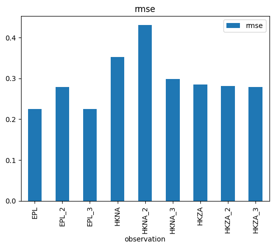
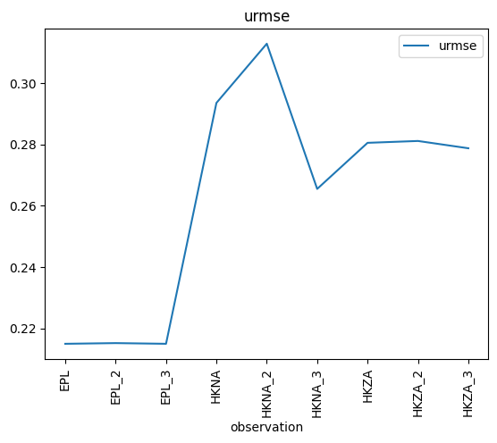
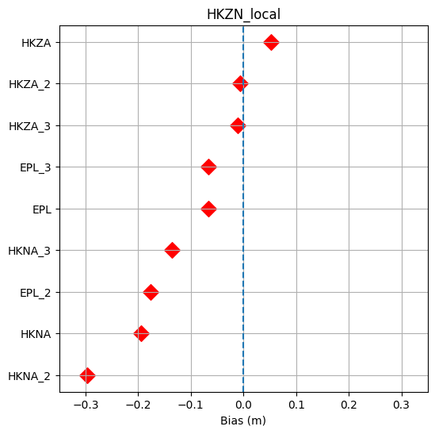

import modelskill as ms
Model skill visualisation#
fn = 'data/SW/HKZN_local_2017_DutchCoast.dfsu'
mr = ms.model_result(fn, name='HKZN_local', item=0)
obs = [ms.PointObservation('data/SW/HKZA_Hm0.dfs0', item=0, x=3.9, y=52.7, name="HKZA"),
ms.PointObservation('data/SW/HKZA_Hm0.dfs0', item=0, x=3.8, y=52.5, name="HKZA_2"),
ms.PointObservation('data/SW/HKZA_Hm0.dfs0', item=0, x=3.5, y=52.6, name="HKZA_3"),
ms.PointObservation('data/SW/HKNA_Hm0.dfs0', item=0, x=4.2420, y=52.6887, name="HKNA"),
ms.PointObservation('data/SW/HKNA_Hm0.dfs0', item=0, x=4.2, y=52.6, name="HKNA_2"),
ms.PointObservation('data/SW/HKNA_Hm0.dfs0', item=0, x=4.3, y=52.7, name="HKNA_3"),
ms.PointObservation("data/SW/eur_Hm0.dfs0", item=0, x=3.2760, y=51.9990, name="EPL"),
ms.PointObservation("data/SW/eur_Hm0.dfs0", item=0, x=3.2, y=51.9, name="EPL_2"),
ms.PointObservation("data/SW/eur_Hm0.dfs0", item=0, x=3.3, y=51.95, name="EPL_3")
]
cc = ms.match(obs=obs, mod=mr)
cc
<ComparerCollection>
Comparer: HKZA
Comparer: HKZA_2
Comparer: HKZA_3
Comparer: HKNA
Comparer: HKNA_2
Comparer: HKNA_3
Comparer: EPL
Comparer: EPL_2
Comparer: EPL_3
Data analysis#
cc.skill()
| n | bias | rmse | urmse | mae | cc | si | r2 | |
|---|---|---|---|---|---|---|---|---|
| observation | ||||||||
| EPL | 66 | -0.066028 | 0.224919 | 0.215009 | 0.189791 | 0.969512 | 0.082773 | 0.932082 |
| EPL_2 | 66 | -0.176137 | 0.278117 | 0.215233 | 0.240594 | 0.968521 | 0.082859 | 0.896154 |
| EPL_3 | 66 | -0.066028 | 0.224919 | 0.215009 | 0.189791 | 0.969512 | 0.082773 | 0.932082 |
| HKNA | 386 | -0.194260 | 0.351964 | 0.293499 | 0.251839 | 0.971194 | 0.094489 | 0.905300 |
| HKNA_2 | 386 | -0.296194 | 0.430783 | 0.312799 | 0.325512 | 0.969579 | 0.100702 | 0.858137 |
| HKNA_3 | 386 | -0.135648 | 0.298130 | 0.265482 | 0.210063 | 0.975813 | 0.085469 | 0.932054 |
| HKZA | 397 | 0.051763 | 0.285233 | 0.280497 | 0.222436 | 0.965938 | 0.096780 | 0.930484 |
| HKZA_2 | 397 | -0.006792 | 0.281183 | 0.281101 | 0.219259 | 0.966268 | 0.096988 | 0.932444 |
| HKZA_3 | 397 | -0.011184 | 0.278949 | 0.278725 | 0.218145 | 0.966900 | 0.096168 | 0.933514 |
s = cc.skill()
type(s)
modelskill.skill.SkillTable
s.rmse.plot.bar();

s['urmse'].plot.line();

Custom plot#
All skill statistics are available in a dataframe, and in case you need a tailor-made plot, you can get data and use matplotlib to get exactly what you need.
import matplotlib.pyplot as plt
df = s.to_dataframe().sort_values('bias')
x = df.bias
y = df.index
plt.subplots(figsize=(6,6))
plt.scatter(x,y,marker='D',c='red',s=100)
plt.xlim(-0.35,0.35)
plt.axvline(0,linestyle='--')
plt.xlabel("Bias (m)")
plt.title(mr.name)
plt.grid()
